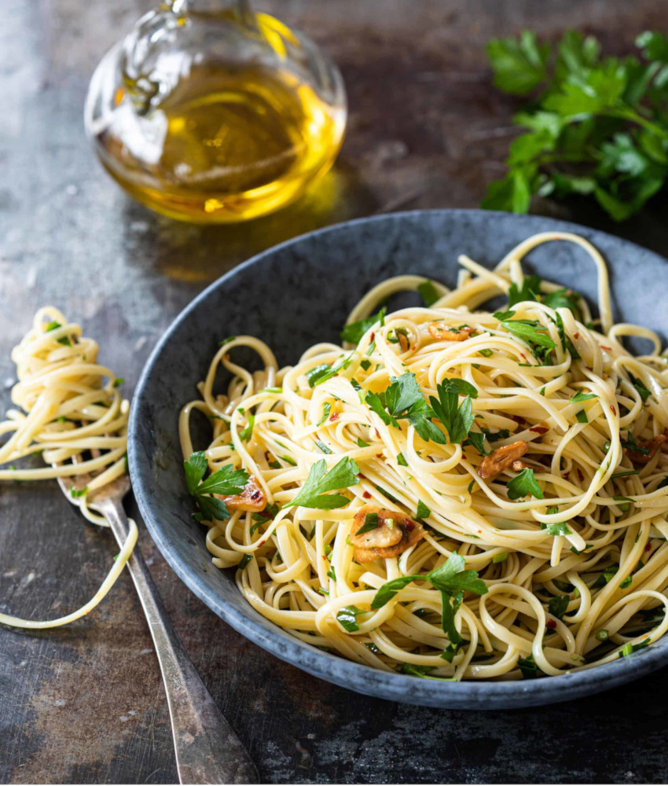

Spaghetti Aglio e Olio
Description
Aglio, olio... e tanti spaghetti!
Spaghetti aglio e olio is a traditional Italian pasta dish from Naples. It is a typical dish of Neapolitan cuisine and is widely popular. Its popularity can be attributed to it being simple to prepare and the fact that it makes use of inexpensive, readily available ingredients that have long shelf lives in a pantry.
Ingredients
- Main Ingredients:
- 100ml of Extra Virgin Olive Oil;
- 1 Table Spoon of Butter;
- 10 Cloves of Garlic;
- Chili Pepper to taste; (finely chopped/diced)
- For Seasoning:
- Black Pepper;
- Salt;
- To Serve:
- Fresh Parmesan Cheese, Parmigiano Reggiano or Pecorino; (finely chopped/diced)
- Fresh Parsley; (finely chopped/diced)
- 500g of Dried Spaghetti.
How to Prepare
- Cook The Pasta:
Bring a very large pot of water with 1 or 2 table spoons of salt to the boil. The amount of water should be enough for the pasta to float inside the pot and the taste should resemble sea water. Add the pasta and let it cook. Start tasting the pasta 1 minute before the recommended cooking time as per the packet instructions; - Aglio e Olio Sauce:
Heat the Extra Virgin Olive Oil over medium high heat. Let the Olive Oil heat and then add the table spoon of Butter until it melts. Then add the Garlic and cook until golden - be careful not to burn it. - Add the Pasta to the Sauce:
When the pasta is ready, transfer it directly from the pot into the frying pan using tongs. Add a kitchen ladle of pasta water in order for the sauce to emulsify. Turn off the heat after 2 minutes of mixing well; (stir gently in order not to break the pasta) - Season:
Add Black Pepper and Salt to taste.
How to Serve
- Serve with plenty of freshly grated cheese of your choice, crushed Black Pepper and a sprinkle of fresh, finely chopped Parsley;
- Enjoy yourself.